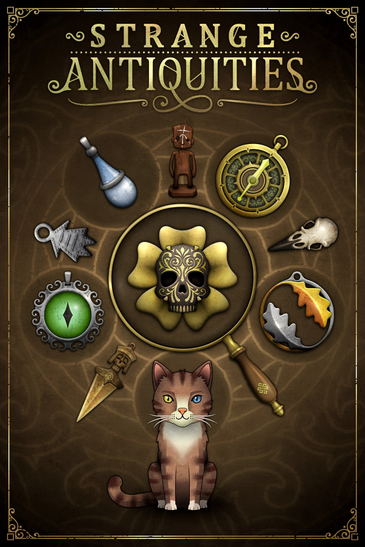

Strange Antiquities
Every archived year-end list appearance, including placement and points earned.
About the Game
Dear Applicant,I am pleased to offer you the role of Apprentice Thaumaturge at Strange Antiquities.You show promise – a sharp mind and a strong stomach – exactly what this work demands. I need you to run the shop while I attend to other pressing matters. You will need a keen eye for detail as you provide the townsfolk of Undermere with occult objects for their arcane needs.Undermere might seem unassuming at first – a serene little town on the edge of a grand lake. But it also sits at the edge of our world and the world beyond – and it falls on us to preserve reality’s frayed edge.Permit me now to outline your duties – you’ll need to be up to speed from day one.Every day, you will welcome new customers into the cosy, candle-lit interior of the shop. Their needs are unpredictable and often alarming, but never dull!Study and Identify: Examine, identify and catalogue strange artefacts. Observation, deduction, and careful reference to our collection of illustrated tomes will serve you well. Mistakes can be… costly.Help… Or Hinder: When dealing with powerful items, your choices matter. Will you help someone with their problem, or curse them with a horrid affliction? In a small town like this, people remember your misdeeds.Explore and Discover: From time to time, you will have to leave the safety of the shop. Whether investigating rumours or retrieving artefacts, my well-loved hand-drawn maps will guide you to where you need to go.Solve and Uncover: Your day-to-day might already feel like a puzzle, but this store holds many more. Few know how old this building is, and fewer still know what secrets lie within its walls.Tending the Familiar: And, of course, Jupiter, the shop’s cat, demands daily affection. In return for his company, please oblige him with the occasional scratch behind the ears.These ravens are an omen. There is a sickness in this town and I intend to investigate it.Barton Potter told me that his bad eye has been aching again. That can’t be a good sign. And a creeping dark has set up in Jack Hungerford’s house. I have business in Ravenglass but I will consult with the occult scholar, Verona Green, before I leave.There are always forces at play that would see our beloved Undermere unmade. We stand between them and the threshold. If events take a turn, you may be called upon to take a stand.This shop is my life’s work. And, for the most part, it has been good to me. May it now offer you equal parts reward and mystery! But remember: some curiosities are best left untouched, and some visitors are not what they seem.I look forward to your arrival.Yours,Eli WhiteThaumaturge & ProprietorStrange Antiquities, UndermerePurveyors of the Arcane since 1683We are two brothers from the UK who have been making games together for over a decade. In 2022, we released our occult puzzle game Strange Horticulture, and the response has been incredible; from amazing reviews and award nominations to appearing in numerous best-of-the-year lists. Most importantly, it has been a joy to read the kind words left by so many of our players on Steam, where we are still rated Overwhelmingly Positive after close to 12,000 reviews!Strange Antiquities is not a sequel, not a direct one, at least. You’ll see some familiar faces, and maybe some plants will pop up, but it’s a brand new story. If you have a fondness for Strange Horticulture and the dark, but welcoming world we’ve created, know that you’ll feel right at home. We want to thank everyone who has played Strange Horticulture, left us a review, told their friends, or supported the game in any way. It has been an amazing journey and we can't wait to share the next chapter with you.Many thanks,Rob & JohnPlease wishlist and follow Strange Antiquities to stay up-to-date with the development and help us spread the word.
| Released | 2025-09-16 |
|---|---|
| Developer | Bad Viking |
| Publisher | Iceberg Interactive |
| Genres | Adventure, Simulation, Casual, Indie |
| Platforms | PC |
SingleplayerSteam AchievementsFull controller supportSteam CloudAtmosphericStory Rich2DExplorationDarkPoint & ClickMysteryChoices Matter
Game information provided by RAWG.
Points by Year
List History
| Year | Source | List | Placement | Points |
|---|---|---|---|---|
| 2025 | NPR | The best games of 2025, picked by NPR's staff | Unranked | 1 |